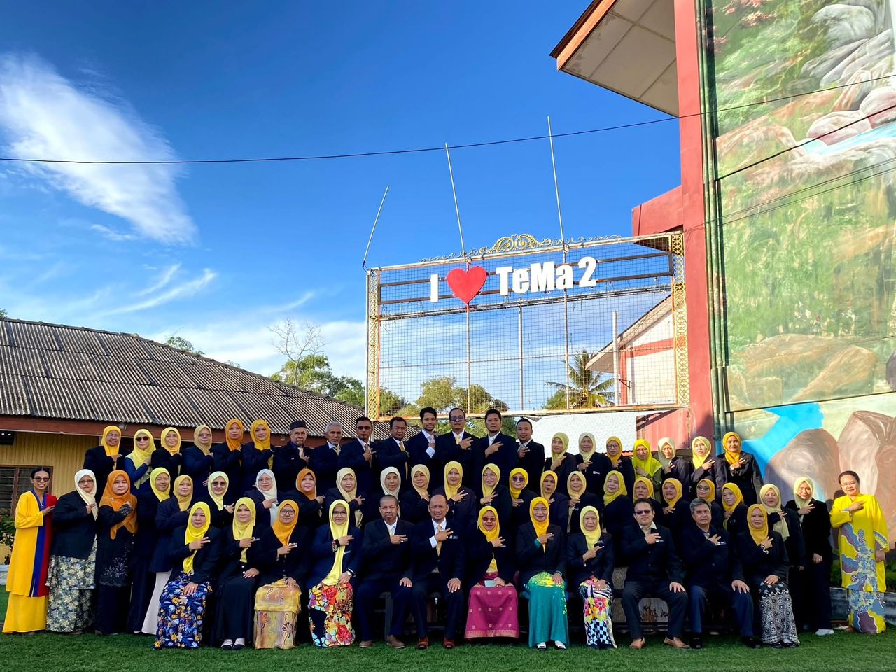
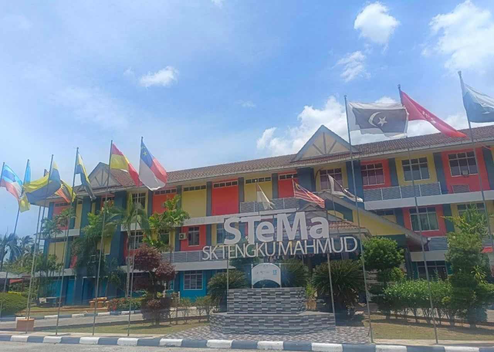

Educational Background
A journey of learning and leadership
A journey of learning and leadership
Diploma in Information Systems Management
Building expertise in data and management.

Pre-Diploma Science (Applied Sciences)
The foundation of my university life.

Completed SPM Examination.
Active in uniform bodies and leadership roles.
Completed UPSR Examination.
Where the interest in technology began.
